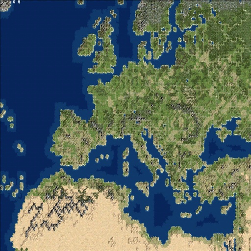

Terrain and Resources
RFC Europe is played on a large, detailed map of Europe. The map is skewed a little bit to make better use of space. This is most noticeable around the Iberian peninsular.
If you've played RFC, then you're familiar with the Marsh terrain, which is generally useless land that prevents movement. RFC Europe introduces Moorland, marginally productive land which can hold only limited improvements. Most of Europe is covered by woodlands. The necessary tech to clear these areas comes about a third of the way into the mod, and so woods will delay your early growth. Dense forests covers much of Russia and Scandanavia. Represented graphically by snow-covered trees, forest is less productive than woodland and cannot be removed for most of the mod.
There are many new resources. Sulfur and timber are required for certain units. New health resources include barley, olives, salt, apples, and potatoes. New luxuries include honey, tea, coffee and tobacco. Several of these resources are only available through Colonies. Sheep is now a luxury rather than a health resources (it represents wool). New abstract resources are included to model colony building. This first you'll encounter is Atlantic Access, which speeds up construction of colonies. Atlantic Access is found in just a few locations off the coast of the largest historic colonizers. If you want to build colonies, you'd be well served to send a workboat to build "Colonial Trade Route" on this resource and thus get access. But watch out! Pillaging these trade routes is very lucrative, so pirates and other civs may attempt to disrupt your oversees empire.